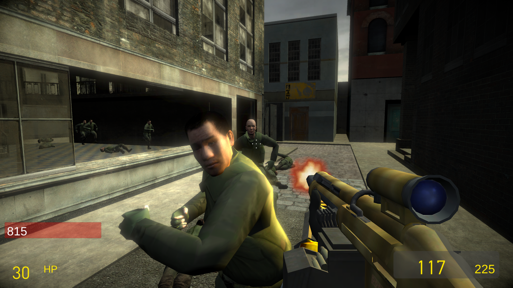
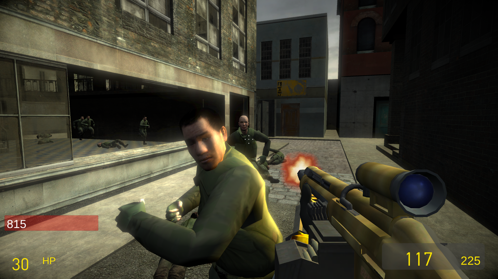
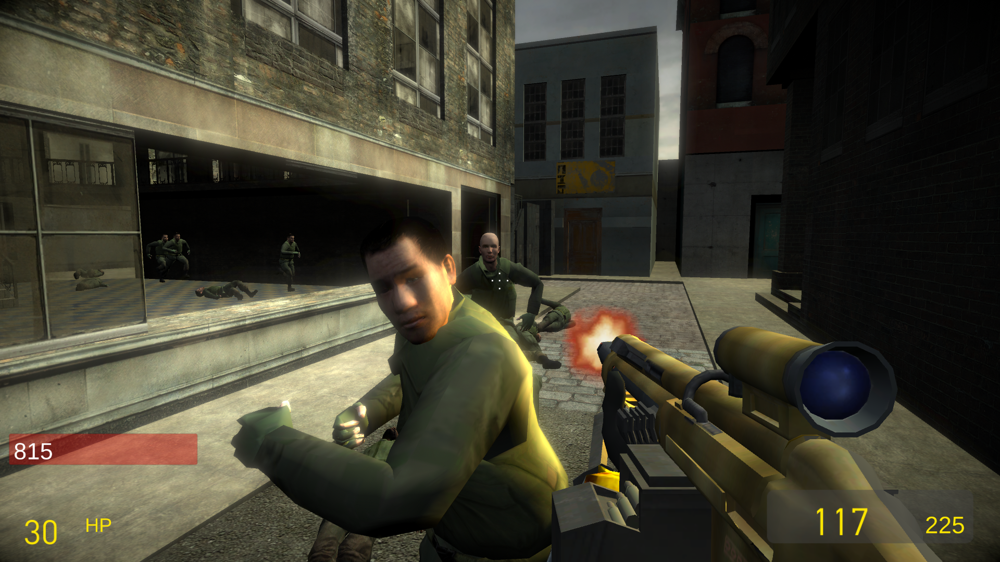
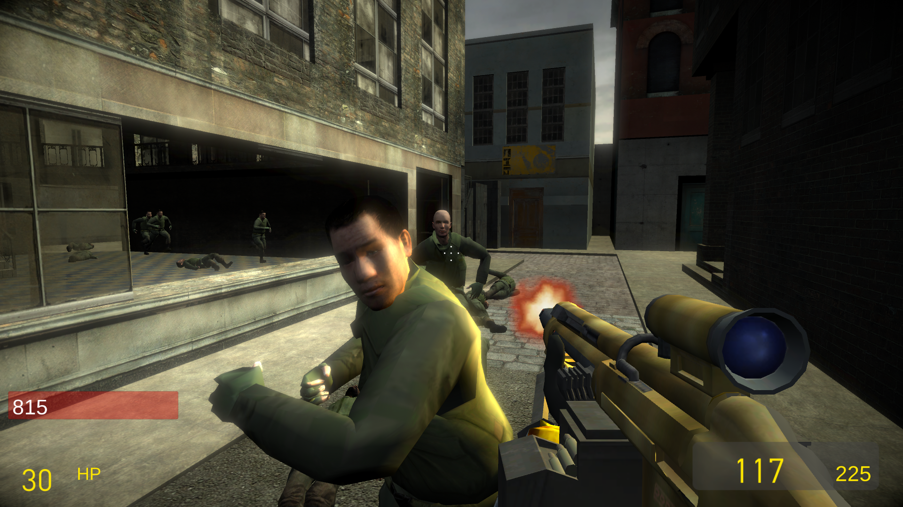
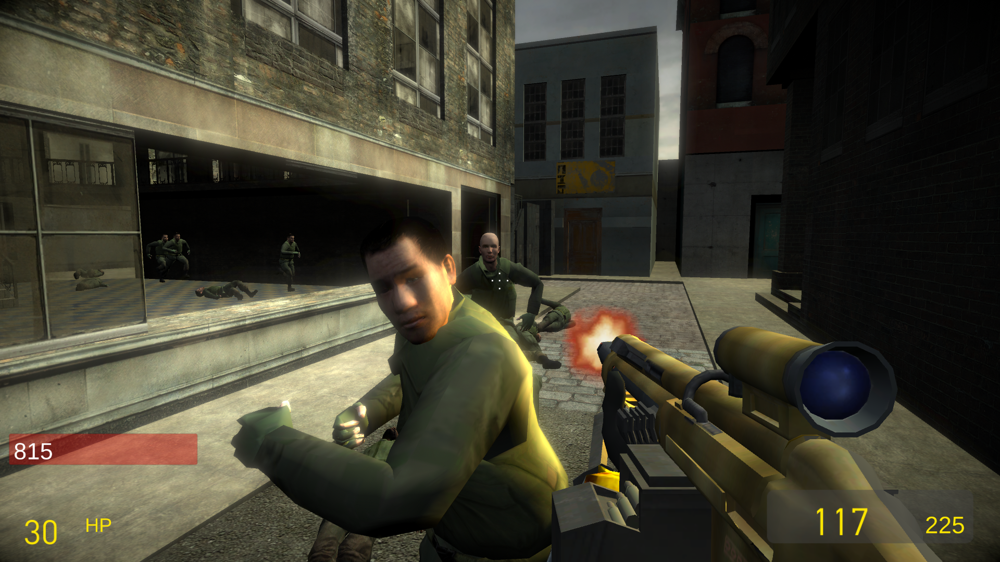

Source to Unity
English Page
Source to Unity
lewa-j'nin Unity Source Tools projesi
uzerine kurulu olan bir projedir, bircok farkliliklar ile:
Harita varliklari yuklenebiliyor
Source oyun motoruna benzer isiklandirma
Haritada input-output olaylari destegi
Soundscript yukleyici
Koreografi yukleyici
WAV dosyasindan otomatik dudak senkronizasyonu
Fotograflar

Videolar
 


